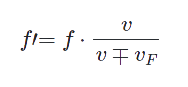

Efecto Doppler II: Frecuencias
La frecuencia aparente o frecuencia percibida por un receptor en
reposo de ondas aumenta cuando el foco emisor se aproxima al
receptor y disminuye cuando se aleja según la expresión:

Donde:
- f' , f : Frecuencia percibida por el receptor y frecuencia emitida por el foco respectivamente. Dado que el emisor está en movimiento, no coincidirán. Su unidad de medida en el Sistema Internacional (S.I.) es el hertzio (Hz)
- v : Velocidad de propagación de la onda en el medio. Es constante y depende de las características del medio. Se relaciona con la longitud de onda y la frecuencia según v=λ·f. Su unidad de medida en el S.I. es el metro por segundo (m/s)
- vF: Velocidad del foco. Se supone constante y menor a v. Su unidad de medida en el S.I. es el m/s
- ∓ : Utilizaremos el signo - si el emisor se acerca al receptor. Utilizaremos el signo + si el emisor se aleja del receptor
Calculadora